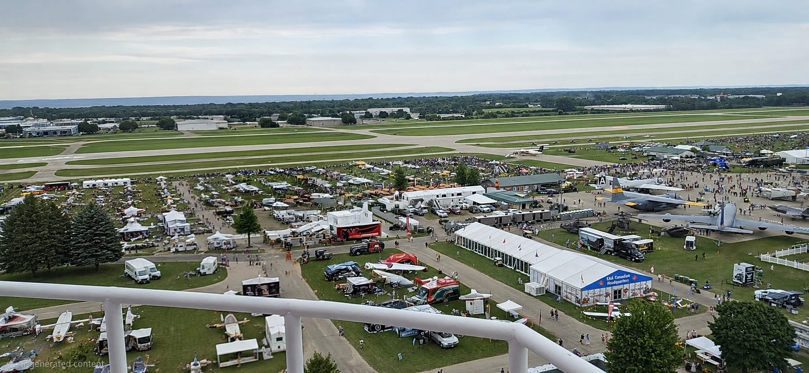

KC8GW Photo Gallery
View station and aviation photos, with a full-screen viewer.
Open Photo Gallery
AMATEUR EXTRA · GMRS WSGZ373
COMMUNICATE · FLY · EXPLORE
PHOTO & VIDEO
Browse the KC8GW photo collection or open the shared photo and video folder.
View station and aviation photos, with a full-screen viewer.
Open Photo GalleryPhotos and videos are stored in the linked Google Drive folder. Access depends on the folder sharing settings.
Open Media Folder